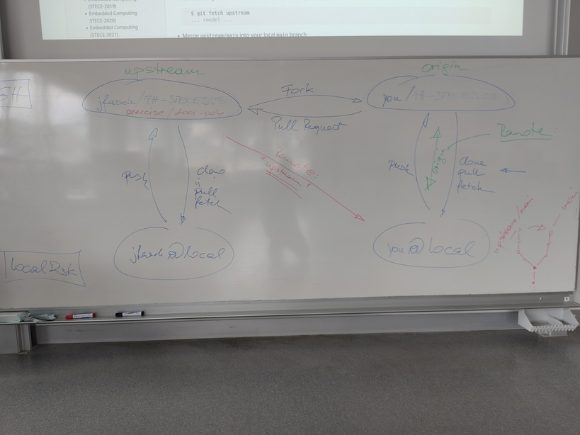

2025-05-{20,22,23} (6+6 UE): Polymorphic Door Parts, And Some Git¶
Git: Update From Upstream¶
Current Status: Your Own Fork Is origin¶
Recently, we arranged that everyone’s own fork of the upstream project (https://github.com/jfasch/FH-STECE2023) is the origin of everyone’s local work.

$ git remote -v
origin git@github.com:you/FH-STECE2023.git (fetch)
origin git@github.com:you/FH-STECE2023.git (push)
$ git branch -a
* main
remotes/origin/HEAD -> origin/main
remotes/origin/main
Update Your Fork¶
Create a remote for upstream https://github.com/jfasch/FH-STECE2023.git (this is done only once):
$ git remote add upstream https://github.com/jfasch/FH-STECE2023.git
$ git remote -v origin git@github.com:you/FH-STECE2023.git (fetch) origin git@github.com:you/FH-STECE2023.git (push) upstream https://github.com/jfasch/FH-STECE2023.git (fetch) upstream https://github.com/jfasch/FH-STECE2023.git (push)
Fetch from upstream. This fetches into a branch
upstream/main.$ git fetch upstream ... roedel ...
Merge
upstream/maininto your localmainbranchCheck that your current branch is main,
$ git branch * main
Merge,
$ git merge upstream/main
Note that this is not always so easy - you might have to resolve conflicts.
Push to default location - your fork,
$ git push
Exercise: Create Interfaces For Door Parts¶
Problem¶
Door parts (
Motor,LightBarrier,PushButton) don’t implement anything that could be of practical use. They don’t do any real hardware stuff.But: They implement functionality that is there for testing
LightBarrier::set_state()PushButton::set_state()Motor::get_direction()
No real light barrier, for example, would have a method
set_state()!⟶ Need hardware parts and mock parts side by side!
Requirement¶

According to From Concrete To Polymorphic (class Sensor), create interfaces (those with
virtualand= 0) forLightBarrier(light-barrier.h)PushButton(push-button.h)Motor(motor.h)
And use those interfaces in
Door.Attention
Doormust not use any concrete classes - only interfacesAs such, it only includes
motor.h, and notmotor-mock.h(for example)
Slight complication: currently, the mocking implementations are in conflict with the proposed interface names.
Rename the files e.g.
light-barrier.htolight-barrier-mock.h, and the classes e.g.LightBarriertoLightBarrierMock.
Work Instructions¶
Exercise takes place in
exercises/door-polymorphic/firstname.lastname. Start with the
tests. In tests/CMakeLists.txt, you’ll find three more tests which
should be able to guide you through the exercise.
add_executable(
door-tests-polymorphic-joerg.faschingbauer
motor-tests.cpp
lightbarrier-tests.cpp
pushbutton-tests.cpp
door-tests.cpp
# --- this is for you :* ---
# motor-polymorphic-tests.cpp
# lightbarrier-polymorphic-tests.cpp
# pushbutton-polymorphic-tests.cpp
)
Uncomment them one by one (e.g.
motor-polymorphic-tests.cpp)Rename current
motor.{h,cpp}tomotor-mock.{h,cpp}Create interface for
Motorinmotor.hUnderstand and fix compiler errors
Run test suite
Repeat with next door part
Homework (Until 2025-06-01)¶
Complete the exercise, and send pull request.